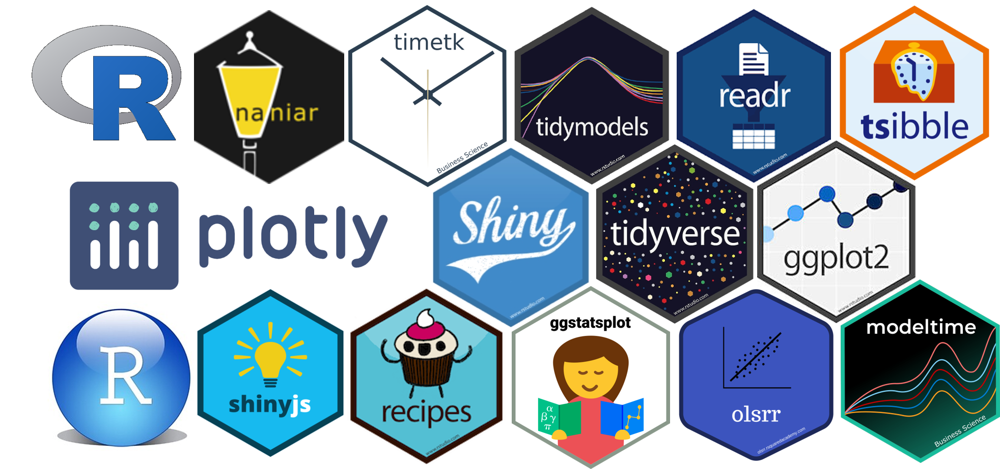
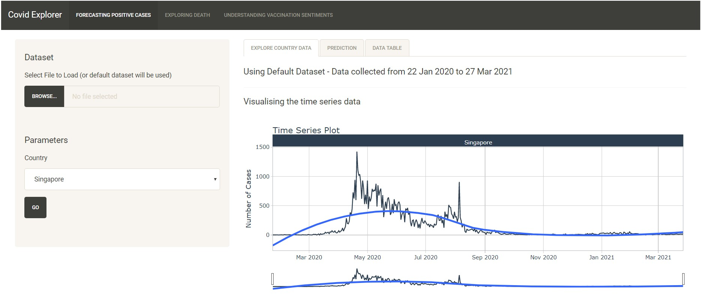
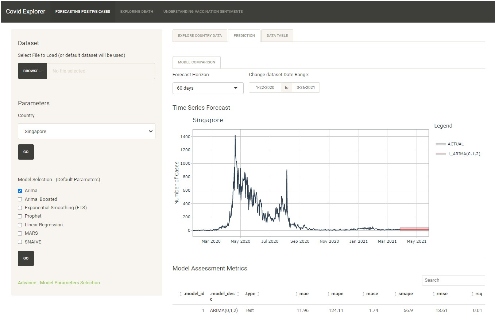
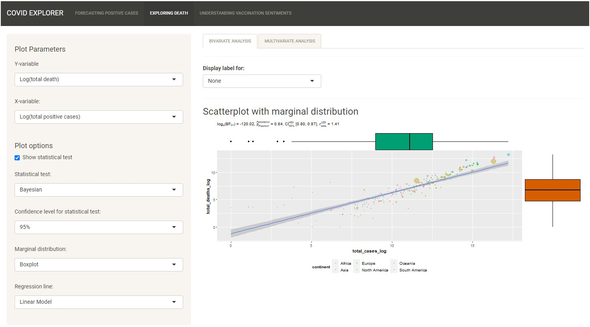
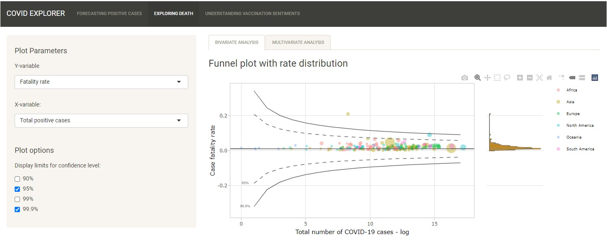
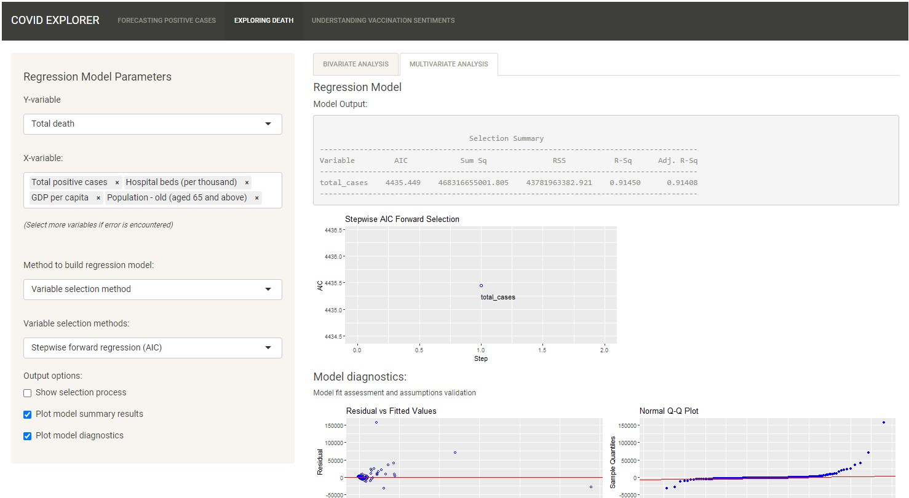
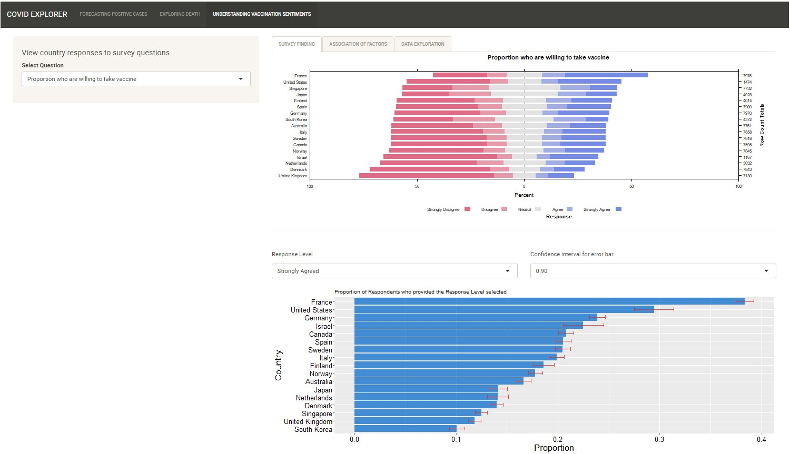
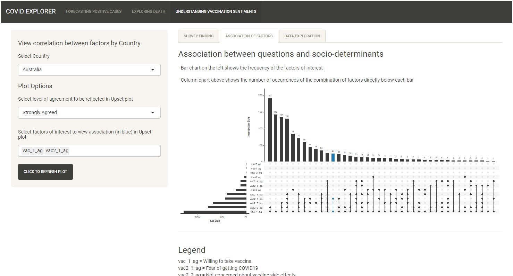

COVID ExploreR
Lin Yongyan, Siow Mun Chai, Tan Wei Li Amanda,
Prof Kam Tin Seong (Mentor)
School of Computing and Information Systems, Singapore Management University

Introduction and Motivation
Background
In the global battle against the Coronavirus (COVID-19), countries seek to understand the virus, its spread, impact and more recently, receptivity towards COVID-19 vaccination. In today’s Data Age, there are many COVID-19 related data available across various platforms. Careful examination and derivation of insights from the data will support global efforts to mitigate the spread and impact of the virus.
Motivation
To develop a consolidated interactive visualization tool to allow in-depth exploration and analysis of COVID-19 data for the generation of insights on key COVID-19 trends: (1) new cases; (2) deaths; and (3) vaccination receptivity.
Design Principles
Simplicity and Clarity - Seamless user experience, easy to understand and aesthetically pleasing visualizations and statistical information
Interactivity - Flexibility to allow exploration of data to meet the specific needs of the user
Utility - Tools provided to generate useful and relevant insights from updated data
Analytical Approach
Data wrangling and transformation was first carried out on the separate sets of data in preparation for further analysis.
The following were the main analyses carried out thereafter.
- Predictive analysis of new cases
- Bivariate and multivariate analysis of deaths and death rates with health, economic and population structure indicators
- Exploratory and bivariate analysis of vaccination receptivity with virus perception and demographics
Data Sources
(1) Center for Systems Science and Engineering (CSSE) at Johns Hopkins University for COVID-related data;
(2) Our World in Data, World Bank, UNdata, United Nations Development Programme
(UNDP) for health, economic and population structure indicators; and
(3) Imperial College London YouGov COVID-19 Behaviour Tracker Data Hub for survey data on virus perception and vaccination receptivity.
Tools Used

Analysis and Insights
NEW CASES
Exploratory Time-Series Analysis
The timetk package was used to provide diagnostic plots to study trends, seasonality and
remainder, anomalies and lag if present in the time-series.

Predictive Time-Series Analysis
The focus here is to allow users to compare and assess the performance of the predictive models
provided. The tool allows the user to explore and compare models available for predictive time-series analysis. The tool also allows advanced users to change more advanced parameters.

DEATHS AND DEATH RATES
The interactive visualization tool is designed such that the output is dependent on the type of variables selected and how the user plans to conduct the analysis.
Scatterplot
The scatterplot from ggstatsplot package was chosen for the statistical tests conducted on the variables.

Funnel Plot
The ggplot2 package was used to generate the funnel plot, which is more appropriate for death rate analysis.

Multiple Linear Regression
The olsrr package was used to generate the UI for the multivariate analysis, which is more appropriate for exploring relationships with multiple independent variables.

VACCINATION RECEPTIVITY
Exploratory Analysis
The HH package was used to generate the diverging stacked bar chart to allow users to view different countries receptivity towards vaccination. Error bars were also used to help users visualize uncertainty.

Association Analysis
The UpSet plot was used to display associations between vaccination attitudes and other factors.

FUTURE WORKS
1. Scope - The application can be developed to include other aspects of COVID-19 such as testing, hospitalisation and vaccination rates.
2. Analysis - More analysis can be included e.g. Trends of New Cases across countries, inclusion of more regression models for COVID-19 Deaths.